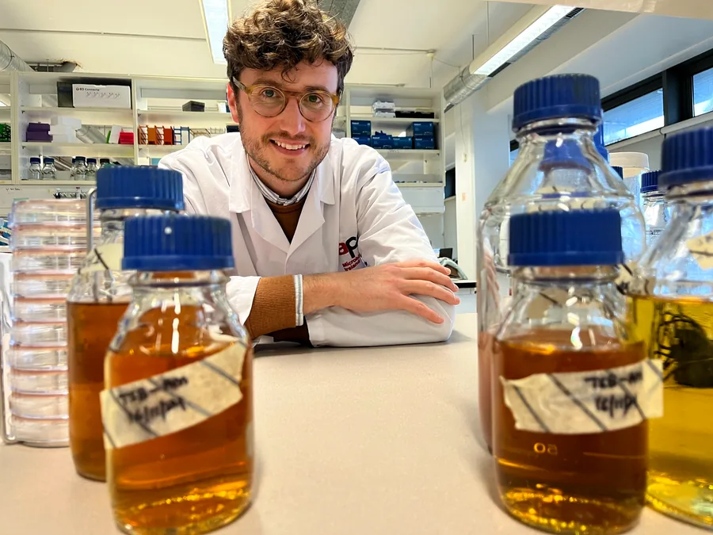
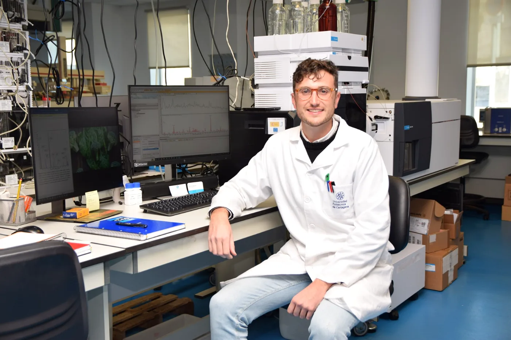
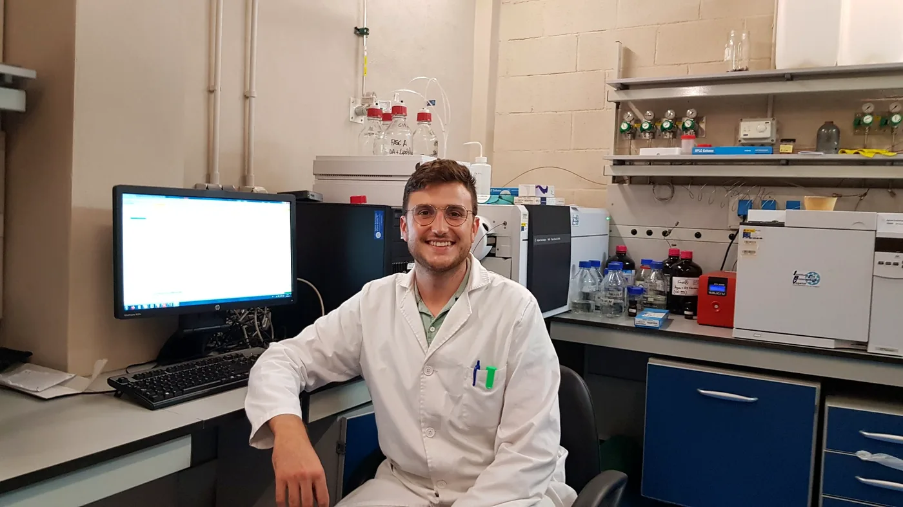
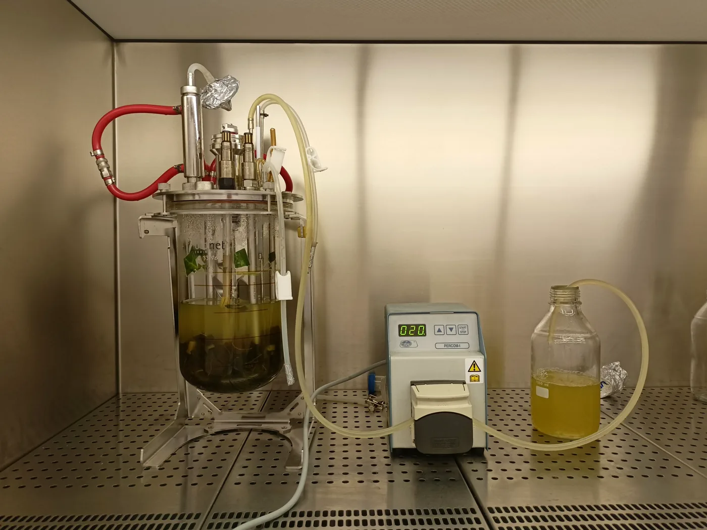
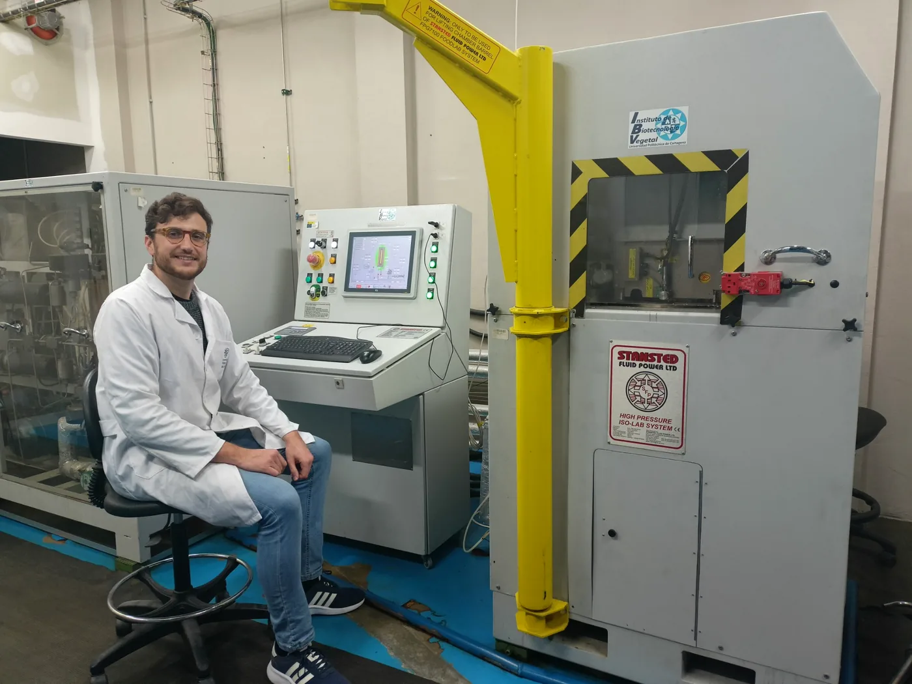
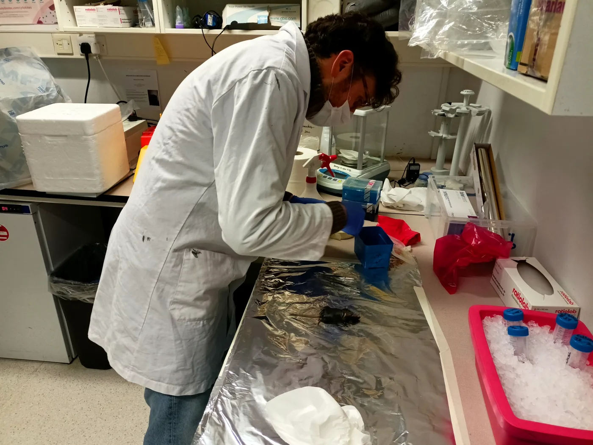
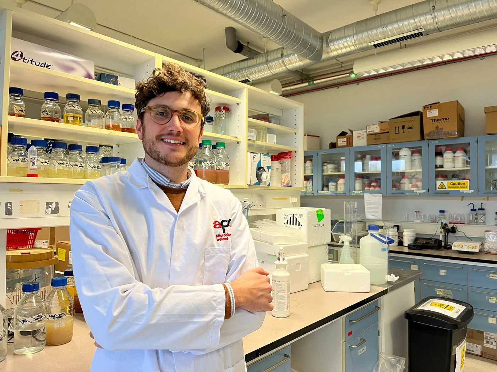

Microbiome, nutrition and metabolic health
Investigating how dietary components, bioactive compounds and food processing strategies influence gut microbiota, intestinal health, inflammation and metabolic disease.
Food Science · Fermentation · Metabolomics · Gut Health
Food scientist working at the interface of functional foods, food bioactives, fermentation, LC-MS metabolomics and intestinal health.

About
I am a food scientist focused on the development and biological evaluation of functional foods, with special interest in fermented plant-based products, food by-product valorisation, gut health and analytical chemistry.
My work integrates food technology, microbial fermentation, LC-MS-based metabolomics and in vitro biological models to understand how processing modifies phytochemicals, bioaccessibility and bioactivity.
Research Areas
Investigating how dietary components, bioactive compounds and food processing strategies influence gut microbiota, intestinal health, inflammation and metabolic disease.
Exploring seaweed supplementation, metabolic health and intestinal inflammatory responses using human samples, epithelial models and omics-based approaches.
Developing innovative functional foods through fermentation and valorisation of agri-food by-products, integrating microbiology, metabolomics and bioactivity assays.
Research in Action






Selected Publications
Journal of Agriculture and Food Research · 2026
Food Bioscience · 2026
Food Research International · 2025
Food & Function · 2024
Food Bioscience · 2024
Contact
For collaborations related to food science, fermentation, metabolomics, gut health and functional food development, please get in touch.